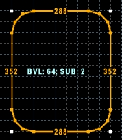
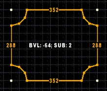

This mode lets you draw various rectangle shapes.
Found in: Preferences -> Controls -> Drawing.
Default key: Ctrl-Shift-D.
Additional actions: Increase Sudivision Level, Decrease Sudivision Level, Increase Corners Bevel, Decrease Corners Bevel.
You can activate this mode by pressing Ctrl-Shift-D (default key).
You can use "Increase/Decrease Sudivision Level" and "Increase/Decrease Corners Bevel" actions to draw rectangles with beveled corners:

Negative bevel values are also supported:

Bevel ammount is based on current grid size.